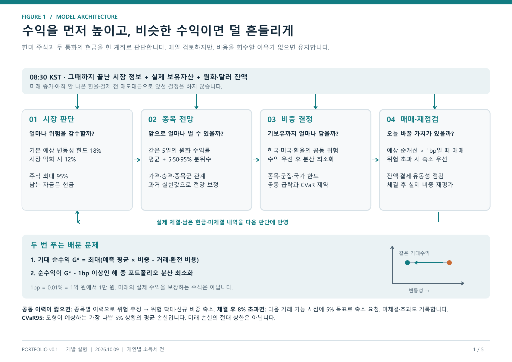
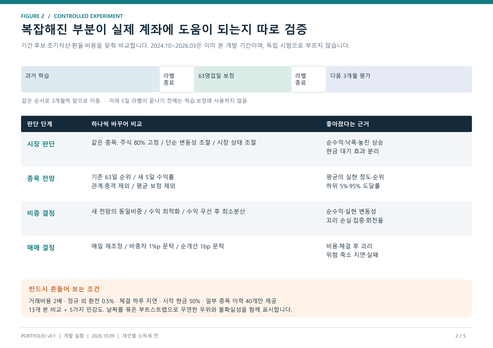
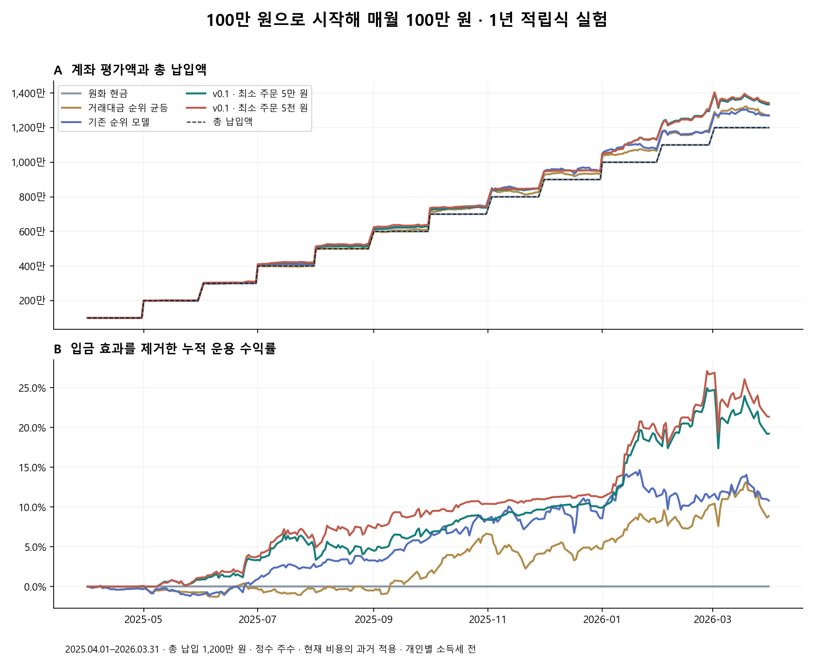

ST RESEARCH · 연구 종합보고서 · 실제 주문 비활성
한미 통합 일별 포트폴리오와 소액 적립식 운용
수익을 먼저 높이고, 비슷한 수익이면 덜 흔들리게.
서론부터 설계·비교 실험·1년 적립식 결과·개선 과제까지.
논문 형식 PDF 받기
초록
개별 종목의 상승·하락 경보를 계좌 전체의 자산 배분 문제로 확장하였다. 한국·미국 주식과 원화·달러 현금을 함께 평가하고, 거래비용 차감 기대수익을 먼저 최대화한 뒤 거의 같은 기대수익의 후보 가운데 변동성이 낮은 비중을 선택한다. 과거 5일 수익 분포, 공동 손실 시나리오, 실제 보유 상태와 결제 가능 현금을 연결한 연구용 v0.1을 구현하였다.
이미 살펴본 개발 구간에서 v0.1은 낙폭을 낮췄으나 단순 전략을 일관되게 앞서지 못했다. 초기 100만 원과 이후 월 100만 원 11회, 총 1,200만 원을 납입한 별도 정수 주수 실험의 v0.1 최종 평가액은 13,344,967원이었고, 납입액 대비 이익은 1,344,967원이었다. 자료 재구성·배당 지급일·기업행사 처리와 실행 실패의 한계가 있어 결과를 미래 수익이나 실제 계좌 재현의 보증으로 해석하지 않는다.
1. 서론
좋은 종목을 고르는 일과 좋은 포트폴리오를 만드는 일은 다르다. 상승 전망이 높은 종목 여러 개를 동시에 보유하면 같은 충격에 함께 하락할 수 있고, 기존 보유를 바꾸는 비용이 기대 이익을 넘을 수 있다. 이 연구는 “얼마나 투자할까, 무엇이 유리할까, 얼마나 담을까, 지금 바꿀까”를 하나의 계좌 장부 위에서 검증한다.
목표는 원화 기준 순수익의 개선이다. 변동성과 꼬리 위험은 낮은 수익을 정당화하는 사후 설명이 아니라 사전에 정한 제약과 동률 판단 기준으로 사용한다. 매일 판단하되 유지도 정상적인 결정으로 인정한다. 연구의 최종 지향점은 설명 가능한 공개 대시보드와 일일 매매안, 이후 충분한 독립 관찰을 거친 자동 운용이다.
2. 관련 연구와 기술적 선택
| 근거 | 채택한 원리 | 이번 구현의 범위 |
|---|
| Park·Hong·Jeon [1] | 급격한 공동 움직임, 시간에 따라 변하는 종목군 관계 | 충격 빈도·감쇠와 과거 상관 특징. 논문 신경망 재현은 아님 |
| MASTER·SAHP [2,3] | 시장 상태와 관계 변화, 사건 이후 영향 | 설명 가능한 통계 특징으로 먼저 추가 가치 검증 |
| Rockafellar–Uryasev [4] | 공동 시나리오의 CVaR 제약 | 전체 시나리오를 한 번에 포함하는 볼록 문제 |
| Boyd 등 [5] | 보유·현금·거래비용을 연결한 반복 운용 | 단일 기간 최적화와 별도 체결 장부 |
| Goldfarb–Iyengar [6] | 추정 오차를 고려한 배분 | 전망 축소·위험 보수화의 근거. 논문 그대로의 강건 최적화는 아님 |
| 공개 운용 사례 [8–10] | 분산, 비중 유지, 거래 문턱 비교 | 초기 주식 80% 비교군과 단순 규칙. 서비스 수익률은 이식하지 않음 |
검토 특허 KR101830090B1 [7]의 국부 타원체·비선형 투영·경로 조정비용 누적을 구현하지 않고, 공개 연구에 기반한 전체 시나리오 제약과 실제 순매매 비용을 사용하였다. 이는 확인한 구성의 기술적 차이를 기록한 것이며 자유실시나 비침해를 확정한 법률 의견이 아니다. 운영 형태가 정해지면 최종 구현과 유효 청구항을 별도로 검토해야 한다.
3. 모델 구조와 목적함수

그림 1. v0.1의 네 판단 단계. 전망과 계좌 상태를 분리하고 최종 체결 뒤 실제 비중을 다시 확인한다.
한국시간 평일 08:30까지 이용 가능한 이전 세션의 가격·거래량·시장 상태·사건·관계 특징을 입력한다. 두 시장별 LightGBM이 다음 체결 이후 5개 공동 평가 영업일의 원화 수익률 평균과 5·50·95% 분위수를 예측한다. 3개월마다 재학습하고, 학습 밖에서 이미 결과가 성숙한 63일을 이용해 보정한다. 날짜별 총 가중치를 같게 하며 평균에는 제곱오차, 분위수에는 pinball loss를 사용한다.
G* = max [ μᵀw − C(w, w₀) ]; min wᵀΣw subject to μᵀw − C(w, w₀) ≥ G* − 0.0001
μ는 같은 5일 기간의 기대수익, w는 목표 비중, w₀는 현재 비중, C는 매매·환전 비용, Σ는 공동 위험이다. 2단계는 최선의 기대 순수익에서 1bp 이내인 후보 중 변동성이 작은 비중을 고른다. “같은 수익이면 낮은 변동성”을 직접 표현하지만, 예측 평균의 오차나 미래 수익을 제거하지는 않는다.
| 항목 | 고정 연구 기준 |
|---|
| 전체·종목·통화 | 주식 최대 95%, 종목 목표 5%·사후 8% 감시, 국가 주식 65%, 미국 주식+달러 75% |
| 공동 위험 | 연 예상 변동성 18%; 시장 악화 시 12%; 5일 CVaR95 7%; 별도 위기 손실 15%; 고상관 군집 25% |
| 공동 이력 부족 | 60관측 미만 신규 매수 금지; 120미만 종목 2% 및 위험 확대; 종목별 가용 이력으로 요인 추정 |
| 거래 판단 | 평상시 일간 매수+매도 20%; 기대 순개선 1bp 문턱; 위험 축소가 비용·회전율 문턱보다 우선 |
| 후보·누락 | 당일 시장별 평균 전망 상위 20개; 보유 종목은 계속 추적; 누락 수익을 0으로 대체하지 않음 |
한국 시장·미국 시장·환율의 3개 요인과 국가 공통 잔차 충격으로 공분산 및 공동 시나리오를 구성한다. 전체 종목의 공동 이력을 교집합으로 잘라 쓰지 않는다. 평균 0의 위험 충격과 별도 위기 시나리오를 사용하므로 높은 기대수익이 위험 한도를 없애지 않는다. 생성한 256개 시나리오는 추가로 관측한 256개 위기가 아니다.
4. 실험 설계와 평가 방법

그림 2. 시장·전망·배분·매매 단계의 비교. 전체 운용 비교와 동일 입력을 고정한 통제 실험을 구분한다.
개발 기간은 2024-10-01–2026-03-31의 391개 공동 평가일, 추가 기간은 2026-04-01–06-05의 48일이다. 두 기간은 각 1억 원에서 새로 시작하며 모두 이미 본 과거 자료다. 학습·보정·시험 순서를 유지하고 라벨이 경계를 넘지 않도록 한다. 독립 시험 또는 실제 미래 모의 운용으로 세지 않는다.
| 단계 | 비교 | 주요 실패 신호 |
|---|
| 시장 | 같은 구성의 고정 80%·변동성 조절·시장 상태 조절 | 현금 증가로 손실만 줄거나 단순 조절보다 낮은 순성과 |
| 전망 | 기존 순위·5일 평균/분위수·관계 특징 제거·보정 제거 | 평균 편향, 낮은 구간 포함률, 하방 위험 누락 |
| 배분 | 전체 운용 방식 비교 및 2단계 최소분산 제거 통제 | 실현 공동 손실·집중·비용으로 이점 소멸 |
| 매매 | 매일·비중 차이·비용 문턱, 별도 동일 목표 경로 | 작은 비용 절감보다 큰 기회비용, 위험 축소 지연 |
최종 결과는 순수익·변동성·낙폭·꼬리 손실·평균 주식 비중·비용·계산 실패·미해결 위험을 함께 본다. 노출이 다른 전략의 수익 차이를 종목 선별력으로 단정하지 않는다. 이미 여러 후보를 살펴본 개발 결과의 블록 재표집 구간은 기술적 불확실성 표시이며, 미사용 시험의 확증 통계로 해석하지 않는다.
5. 기존 모델과 포트폴리오 후보의 결과
개발 기간 · 기본 체결
| 전략 | 순수익 | 연 변동성 | 최대 낙폭 | 평균 주식 |
|---|
| 초기 주식 80% 유지 | 55.76% | 20.42% | -20.75% | 82.53% |
| 고정 80% 동일비중 | 51.32% | 18.87% | -17.50% | 79.85% |
| 기존 순위 모델 | 34.16% | 17.30% | -17.66% | 69.04% |
| v0.1 기본 | 44.61% | 12.45% | -8.16% | 48.84% |
| 매일 재조정 | 50.87% | 12.13% | -8.18% | 49.21% |
| 비중 차이 1%p 규칙 | 49.91% | 11.95% | -7.83% | 48.96% |
| v0.2 체결 + 보정 † | 47.18% | 12.08% | -9.28% | 49.80% |
추가 기간 · 기본 체결
| 전략 | 순수익 | 연 변동성 | 최대 낙폭 | 평균 주식 |
|---|
| 초기 주식 80% 유지 | 33.66% | 27.93% | -7.42% | 83.96% |
| 고정 80% 동일비중 | 40.42% | 27.45% | -6.42% | 80.11% |
| 기존 순위 모델 | 18.58% | 17.26% | -2.96% | 63.79% |
| v0.1 기본 | 8.37% | 16.26% | -4.87% | 37.90% |
| 매일 재조정 | 8.27% | 16.27% | -4.98% | 37.93% |
| 비중 차이 1%p 규칙 | 8.73% | 16.37% | -5.04% | 37.86% |
| v0.2 체결 + 보정 † | 11.54% | 16.33% | -3.91% | 53.66% |
개발 기간의 v0.1은 기존 순위 모델보다 수익과 낙폭이 개선됐으나, 초기 80% 주식 유지의 수익을 넘지 못했다. 비중 차이 1%p 매매 규칙은 수익 49.91%·변동성 11.95%로 v0.2 결합 후보의 47.18%·12.08%보다 좋았다. 추가 기간에서는 결합 후보와 단순 규칙의 순서가 바뀌었다. 복잡한 설계가 단순 규칙보다 일관되게 우월하다는 증거는 없다.
v0.2의 하루 지연 개발 조건에서 체결 수정 단독과 결합 후보는 각각 41건·44건의 계산 실패를 기록했다. 높은 장부 수익을 실행 안정성의 증거로 사용할 수 없다. 순주문 비용 불일치와 상위 20개 경계의 동점 처리 문제를 원본과 함께 보존했으며, 최종 주문 재검사 후보는 별도로 비교한다. 평균 편향을 줄이는 보정도 전체 분포의 보정과 동일하지 않았다.
최종 주문 재검사 · 사전 지정된 전체 비교
같은 전망·초기 계좌·위험 한도에서 최종 순주문 비용과 환전·체결 가능성을 다시 확인한 수정안을 비교했다. 개발·추가 기간, 기본·하루 지연 체결을 모두 표시한다. 아래 34개 집계 행에는 새 수정안의 8개 조건과 기존 대조 조건이 함께 들어 있다. 별도 자료의 기존 44개 조건과 일부가 겹치므로 행 수를 단순히 더하지 않는다. 매일 매매·비중 차이 규칙까지 포함한 기존 비교도 함께 확인한다.
같은 기간·체결 조건의 v0.1과 비교하면 새 후보 8개 조건 중 누적 순수익이 높은 조건은 4개, 낮은 조건은 4개였다. 실현 변동성의 점 추정치는 8개 조건에서 더 낮았다. 수익을 줄이고 변동성을 낮춘 경우도 포함되므로 이를 동일한 수익에서의 일관된 개선으로 해석하지 않는다.
아래 16개 사전 지정 대응 비교에서 계산 가능한 연 수익 차이 구간은 40개이며, 그 하한이 0보다 큰 구간은 0개였다. 이는 이미 본 자료의 기술적 재표본 구간이다. 수익 우위의 독립 검증이나 운영 채택을 뜻하지 않으며, 짧은 추가 기간과 체결 지연에서 순서가 달라지는지 함께 본다.
개발 기간 · 기본 체결
| 후보 | 순수익 | 연 변동성 | 최대 낙폭 | 평균 주식 |
|---|
| 주문 재검사 + 수익 보정 | 38.82% | 11.02% | -8.07% | 45.02% |
| 주문 재검사 | 47.72% | 11.46% | -7.25% | 47.33% |
| v0.1 그대로 | 44.61% | 12.45% | -8.16% | 48.84% |
| v0.2 체결 구조 | 44.08% | 12.26% | -7.61% | 53.45% |
| 수익 보정만 | 44.52% | 11.68% | -8.01% | 48.62% |
| v0.2 체결 + 보정 | 47.18% | 12.08% | -9.28% | 49.80% |
| 기존 순위 모델 | 34.16% | 17.30% | -17.66% | 69.04% |
| 유동성 상위 동일비중 | 51.32% | 18.87% | -17.50% | 79.85% |
| 초기 80% 그대로 보유 | 55.76% | 20.42% | -20.75% | 82.53% |
| 후보 | 거래·환전 비용 | 변동성·CVaR 초과일 | 모든 한도 초과일 | 주문 검사 미해결일 | 계산·주문 검사 실패 건 |
|---|
| 주문 재검사 + 수익 보정 | 3,828,431원 | 1 | 117 | 43 | 21 |
| 주문 재검사 | 4,133,813원 | 0 | 127 | 41 | 17 |
| v0.1 그대로 | 3,994,779원 | 1 | 미측정 | 해당 검사 없음 | 0 |
| v0.2 체결 구조 | 3,346,523원 | 1 | 미측정 | 해당 검사 없음 | 0 |
| 수익 보정만 | 4,130,155원 | 6 | 미측정 | 해당 검사 없음 | 0 |
| v0.2 체결 + 보정 | 3,620,686원 | 2 | 미측정 | 해당 검사 없음 | 1 |
| 기존 순위 모델 | 18,176,750원 | 193 | 미측정 | 해당 검사 없음 | 0 |
| 유동성 상위 동일비중 | 4,080,856원 | 391 | 미측정 | 해당 검사 없음 | 0 |
| 초기 80% 그대로 보유 | 0원 | 391 | 미측정 | 해당 검사 없음 | 0 |
| 수정안 / 비교군 | 누적 수익 차이 | 변동성 비율 | 연 수익 차이의 95% 구간 |
|---|
| 주문 재검사 + 수익 보정 / 수익 보정만 | -5.71%p | 0.943 | 10일: -9.93%p ~ +2.37%p; 20일: -9.57%p ~ +2.13%p; 60일: -8.99%p ~ +1.63%p |
| 주문 재검사 + 수익 보정 / v0.2 체결 + 보정 | -8.37%p | 0.913 | 10일: -12.30%p ~ +0.94%p; 20일: -13.37%p ~ +1.42%p; 60일: -13.17%p ~ +1.83%p |
| 주문 재검사 / v0.2 체결 구조 | +3.64%p | 0.935 | 10일: -5.88%p ~ +9.86%p; 20일: -5.39%p ~ +9.70%p; 60일: -5.97%p ~ +9.70%p |
| 주문 재검사 / v0.1 그대로 | +3.11%p | 0.921 | 10일: -5.54%p ~ +8.59%p; 20일: -5.46%p ~ +8.24%p; 60일: -4.06%p ~ +6.99%p |
변동성 비율의 95% 구간: 1을 포함하면 이 구간으로 변동성 감소를 단정할 수 없다. 수익 차이의 구간과 함께 확인한다.
| 수정안 / 비교군 | 10일 묶음 | 20일 묶음 | 60일 묶음 |
|---|
| 주문 재검사 + 수익 보정 / 수익 보정만 | 0.882 ~ 0.981 | 0.876 ~ 0.981 | 0.885 ~ 0.971 |
| 주문 재검사 + 수익 보정 / v0.2 체결 + 보정 | 0.874 ~ 0.960 | 0.880 ~ 0.961 | 0.884 ~ 0.968 |
| 주문 재검사 / v0.2 체결 구조 | 0.873 ~ 0.996 | 0.870 ~ 0.999 | 0.869 ~ 0.987 |
| 주문 재검사 / v0.1 그대로 | 0.869 ~ 0.967 | 0.874 ~ 0.965 | 0.871 ~ 0.967 |
개발 기간 · 하루 지연
| 후보 | 순수익 | 연 변동성 | 최대 낙폭 | 평균 주식 |
|---|
| 주문 재검사 + 수익 보정 | 52.97% | 10.89% | -7.76% | 43.32% |
| 주문 재검사 | 47.98% | 10.34% | -5.91% | 43.53% |
| v0.1 그대로 | 37.75% | 12.81% | -8.57% | 46.95% |
| v0.2 체결 구조 | 53.01% | 10.57% | -5.74% | 45.49% |
| 수익 보정만 | 37.89% | 12.10% | -8.65% | 44.41% |
| v0.2 체결 + 보정 | 50.78% | 11.05% | -8.09% | 40.08% |
| 유동성 상위 동일비중 | 51.97% | 18.88% | -17.00% | 79.90% |
| 초기 80% 그대로 보유 | 55.76% | 20.42% | -20.75% | 82.53% |
| 후보 | 거래·환전 비용 | 변동성·CVaR 초과일 | 모든 한도 초과일 | 주문 검사 미해결일 | 계산·주문 검사 실패 건 |
|---|
| 주문 재검사 + 수익 보정 | 2,797,624원 | 2 | 87 | 40 | 49 |
| 주문 재검사 | 2,787,587원 | 1 | 78 | 30 | 15 |
| v0.1 그대로 | 10,102,147원 | 10 | 미측정 | 해당 검사 없음 | 1 |
| v0.2 체결 구조 | 3,171,781원 | 4 | 미측정 | 해당 검사 없음 | 41 |
| 수익 보정만 | 11,277,988원 | 14 | 미측정 | 해당 검사 없음 | 0 |
| v0.2 체결 + 보정 | 3,197,914원 | 9 | 미측정 | 해당 검사 없음 | 44 |
| 유동성 상위 동일비중 | 4,197,686원 | 390 | 미측정 | 해당 검사 없음 | 0 |
| 초기 80% 그대로 보유 | 0원 | 391 | 미측정 | 해당 검사 없음 | 0 |
| 수정안 / 비교군 | 누적 수익 차이 | 변동성 비율 | 연 수익 차이의 95% 구간 |
|---|
| 주문 재검사 + 수익 보정 / 수익 보정만 | +15.08%p | 0.901 | 10일: -2.41%p ~ +17.82%p; 20일: -4.11%p ~ +17.90%p; 60일: -3.27%p ~ +18.36%p |
| 주문 재검사 + 수익 보정 / v0.2 체결 + 보정 | +2.19%p | 0.986 | 10일: -7.71%p ~ +9.56%p; 20일: -9.20%p ~ +9.72%p; 60일: -9.52%p ~ +10.20%p |
| 주문 재검사 / v0.2 체결 구조 | -5.03%p | 0.978 | 10일: -12.46%p ~ +6.93%p; 20일: -13.14%p ~ +6.80%p; 60일: -13.96%p ~ +7.42%p |
| 주문 재검사 / v0.1 그대로 | +10.23%p | 0.807 | 10일: -3.89%p ~ +13.98%p; 20일: -3.25%p ~ +14.11%p; 60일: -2.62%p ~ +13.34%p |
변동성 비율의 95% 구간: 1을 포함하면 이 구간으로 변동성 감소를 단정할 수 없다. 수익 차이의 구간과 함께 확인한다.
| 수정안 / 비교군 | 10일 묶음 | 20일 묶음 | 60일 묶음 |
|---|
| 주문 재검사 + 수익 보정 / 수익 보정만 | 0.847 ~ 0.947 | 0.840 ~ 0.944 | 0.846 ~ 0.932 |
| 주문 재검사 + 수익 보정 / v0.2 체결 + 보정 | 0.937 ~ 1.039 | 0.930 ~ 1.034 | 0.935 ~ 1.027 |
| 주문 재검사 / v0.2 체결 구조 | 0.902 ~ 1.050 | 0.894 ~ 1.056 | 0.884 ~ 1.067 |
| 주문 재검사 / v0.1 그대로 | 0.746 ~ 0.890 | 0.746 ~ 0.895 | 0.756 ~ 0.886 |
추가 기간 · 기본 체결
| 후보 | 순수익 | 연 변동성 | 최대 낙폭 | 평균 주식 |
|---|
| 주문 재검사 + 수익 보정 | 14.81% | 15.80% | -3.18% | 44.11% |
| 주문 재검사 | 6.73% | 15.32% | -4.72% | 36.55% |
| v0.1 그대로 | 8.37% | 16.26% | -4.87% | 37.90% |
| v0.2 체결 구조 | 7.00% | 15.66% | -5.05% | 39.01% |
| 수익 보정만 | 10.01% | 16.33% | -4.19% | 52.13% |
| v0.2 체결 + 보정 | 11.54% | 16.33% | -3.91% | 53.66% |
| 기존 순위 모델 | 18.58% | 17.26% | -2.96% | 63.79% |
| 유동성 상위 동일비중 | 40.42% | 27.45% | -6.42% | 80.11% |
| 초기 80% 그대로 보유 | 33.66% | 27.93% | -7.42% | 83.96% |
| 후보 | 거래·환전 비용 | 변동성·CVaR 초과일 | 모든 한도 초과일 | 주문 검사 미해결일 | 계산·주문 검사 실패 건 |
|---|
| 주문 재검사 + 수익 보정 | 452,677원 | 12 | 32 | 28 | 26 |
| 주문 재검사 | 501,310원 | 5 | 25 | 9 | 5 |
| v0.1 그대로 | 548,434원 | 5 | 미측정 | 해당 검사 없음 | 0 |
| v0.2 체결 구조 | 558,891원 | 1 | 미측정 | 해당 검사 없음 | 0 |
| 수익 보정만 | 709,821원 | 4 | 미측정 | 해당 검사 없음 | 0 |
| v0.2 체결 + 보정 | 756,604원 | 0 | 미측정 | 해당 검사 없음 | 0 |
| 기존 순위 모델 | 2,463,203원 | 23 | 미측정 | 해당 검사 없음 | 0 |
| 유동성 상위 동일비중 | 451,916원 | 48 | 미측정 | 해당 검사 없음 | 0 |
| 초기 80% 그대로 보유 | 0원 | 48 | 미측정 | 해당 검사 없음 | 0 |
| 수정안 / 비교군 | 누적 수익 차이 | 변동성 비율 | 연 수익 차이의 95% 구간 |
|---|
| 주문 재검사 + 수익 보정 / 수익 보정만 | +4.79%p | 0.968 | 10일: -6.67%p ~ +87.42%p; 20일: -10.22%p ~ +74.92%p; 60일: 산출 불가 |
| 주문 재검사 + 수익 보정 / v0.2 체결 + 보정 | +3.26%p | 0.968 | 10일: -32.31%p ~ +71.88%p; 20일: -35.47%p ~ +64.24%p; 60일: 산출 불가 |
| 주문 재검사 / v0.2 체결 구조 | -0.27%p | 0.978 | 10일: -24.91%p ~ +6.30%p; 20일: -25.29%p ~ +5.42%p; 60일: 산출 불가 |
| 주문 재검사 / v0.1 그대로 | -1.64%p | 0.942 | 10일: -44.98%p ~ +0.28%p; 20일: -46.03%p ~ +0.18%p; 60일: 산출 불가 |
변동성 비율의 95% 구간: 1을 포함하면 이 구간으로 변동성 감소를 단정할 수 없다. 수익 차이의 구간과 함께 확인한다.
| 수정안 / 비교군 | 10일 묶음 | 20일 묶음 | 60일 묶음 |
|---|
| 주문 재검사 + 수익 보정 / 수익 보정만 | 0.883 ~ 1.041 | 0.876 ~ 1.035 | 산출 불가 |
| 주문 재검사 + 수익 보정 / v0.2 체결 + 보정 | 0.847 ~ 1.023 | 0.844 ~ 1.023 | 산출 불가 |
| 주문 재검사 / v0.2 체결 구조 | 0.933 ~ 1.001 | 0.932 ~ 0.999 | 산출 불가 |
| 주문 재검사 / v0.1 그대로 | 0.851 ~ 0.969 | 0.852 ~ 0.970 | 산출 불가 |
추가 기간 · 하루 지연
| 후보 | 순수익 | 연 변동성 | 최대 낙폭 | 평균 주식 |
|---|
| 주문 재검사 + 수익 보정 | 8.26% | 15.27% | -3.49% | 41.21% |
| 주문 재검사 | 7.72% | 15.58% | -4.04% | 34.31% |
| v0.1 그대로 | 10.72% | 16.09% | -4.18% | 37.16% |
| v0.2 체결 구조 | 6.65% | 15.36% | -4.81% | 35.72% |
| 수익 보정만 | 9.60% | 16.29% | -3.99% | 45.60% |
| v0.2 체결 + 보정 | 12.23% | 15.92% | -2.83% | 43.18% |
| 유동성 상위 동일비중 | 39.79% | 27.30% | -6.52% | 80.24% |
| 초기 80% 그대로 보유 | 33.66% | 27.93% | -7.42% | 83.96% |
| 후보 | 거래·환전 비용 | 변동성·CVaR 초과일 | 모든 한도 초과일 | 주문 검사 미해결일 | 계산·주문 검사 실패 건 |
|---|
| 주문 재검사 + 수익 보정 | 459,479원 | 3 | 13 | 7 | 17 |
| 주문 재검사 | 370,887원 | 3 | 23 | 6 | 14 |
| v0.1 그대로 | 916,569원 | 15 | 미측정 | 해당 검사 없음 | 0 |
| v0.2 체결 구조 | 422,181원 | 8 | 미측정 | 해당 검사 없음 | 7 |
| 수익 보정만 | 1,732,027원 | 12 | 미측정 | 해당 검사 없음 | 0 |
| v0.2 체결 + 보정 | 446,334원 | 5 | 미측정 | 해당 검사 없음 | 2 |
| 유동성 상위 동일비중 | 437,465원 | 48 | 미측정 | 해당 검사 없음 | 0 |
| 초기 80% 그대로 보유 | 0원 | 48 | 미측정 | 해당 검사 없음 | 0 |
| 수정안 / 비교군 | 누적 수익 차이 | 변동성 비율 | 연 수익 차이의 95% 구간 |
|---|
| 주문 재검사 + 수익 보정 / 수익 보정만 | -1.34%p | 0.937 | 10일: -70.04%p ~ +20.10%p; 20일: -72.40%p ~ +16.66%p; 60일: 산출 불가 |
| 주문 재검사 + 수익 보정 / v0.2 체결 + 보정 | -3.97%p | 0.959 | 10일: -73.97%p ~ -3.63%p; 20일: -66.69%p ~ -7.81%p; 60일: 산출 불가 |
| 주문 재검사 / v0.2 체결 구조 | +1.07%p | 1.014 | 10일: -16.19%p ~ +31.12%p; 20일: -13.56%p ~ +21.04%p; 60일: 산출 불가 |
| 주문 재검사 / v0.1 그대로 | -3.00%p | 0.968 | 10일: -60.32%p ~ -3.17%p; 20일: -57.40%p ~ -5.08%p; 60일: 산출 불가 |
변동성 비율의 95% 구간: 1을 포함하면 이 구간으로 변동성 감소를 단정할 수 없다. 수익 차이의 구간과 함께 확인한다.
| 수정안 / 비교군 | 10일 묶음 | 20일 묶음 | 60일 묶음 |
|---|
| 주문 재검사 + 수익 보정 / 수익 보정만 | 0.755 ~ 0.991 | 0.765 ~ 0.991 | 산출 불가 |
| 주문 재검사 + 수익 보정 / v0.2 체결 + 보정 | 0.822 ~ 1.000 | 0.854 ~ 0.989 | 산출 불가 |
| 주문 재검사 / v0.2 체결 구조 | 0.976 ~ 1.184 | 0.983 ~ 1.184 | 산출 불가 |
| 주문 재검사 / v0.1 그대로 | 0.828 ~ 1.027 | 0.834 ~ 1.026 | 산출 불가 |
누적 수익 차이는 같은 기간의 수정안 수익에서 비교군 수익을 뺀 값이며, 변동성 비율은 1보다 작을 때 수정안이 덜 흔들렸다. 수익 구간은 누적 차이와 다른 연환산 수익 차이다. 변동성 비율과 함께 같은 날짜를 10·20·60일 묶음으로 각각 2,000회 재표집했다. 추가 기간은 48일이어서 60일 묶음은 산출하지 못한다. 재표집된 비교군의 변동성이 0이면 비율 구간도 산출 불가로 남긴다. 이미 본 기간과 여러 후보의 비교이므로 유리한 구간이 나와도 독립 검증이나 운영 채택을 의미하지 않는다.
기존 모델의 변동성·CVaR 초과일과 수정안의 모든 한도 초과일은 정의가 다르다. 이전에 측정하지 않은 값을 0으로 채우지 않는다. 계산·주문 검사 실패는 최적화 계산 중단과 산출 주문의 최종 검사 거절을 함께 센 사건 수다. 하루에 여러 번 발생할 수 있고, 해가 없다는 수학적 증명과 같지 않다. 주문 검사 통과와 실제 체결 후 위험 준수도 별도로 평가한다. 이 수정안은 소수 연구 주수와 선언된 가격·환율 시나리오를 사용하며 아래 적립식 정수 주수 실험과 다른 계좌다.
최종 주문 검사는 선언된 후보를 순서대로 고르는 방식이며 전역 최적 주문을 보장하지 않는다. 기존 상위 20개 경계의 동점 종목 선택 문제도 공통으로 남아 있다. 실제 원주수·부분 체결·공식 기업행사·최신 계좌 자료를 연결한 독립 모의 운용은 후속 과제다.
최종 주문 재검사 전체 비교 아카이브 SHA-256: f983c2361444c4c68502f70809e4fc781cd9402a17f0cbd929ab06853820ed33
최종 주문 재검사 전체 비교와 계좌 보기
8개 계좌의 전체 날짜를 저장된 최종 주문으로 다시 계산해 자산·현금·비용·회전액을 원본 장부와 대조했다. 공개 대시보드에서는 계좌별 최근 25개 판단일의 요청 비중·승인 비중·체결 후 비중을 구분해 볼 수 있다. 보유 내역 재현 아카이브 SHA-256: 01aa46d74a2038fceba088fec35780e4502a416fc9a4b3138c429c12976f4961
실패 기록의 분류와 그날의 최종 계좌 상태
8개 조건의 실패 기록을 모두 대조했다. 최종 주문 거절은 계산된 주문이 선언된 검사를 통과하지 못한 사건이며, 분산 단계의 정확도 부족이나 계산기 예외와 구분한다. 원인을 확정하는 분류가 아니라 기록된 실패 단계를 분류한 것이다. 실패가 없는 조건도 0으로 남긴다.
전체 기록 164건 중 최종 주문 거절은 157건, 분산 단계 정확도 부족은 6건, 기타 단계 정확도 부족은 0건, 계산기 예외는 1건, 기타 기록은 0건이었다. 검사 범위가 다른 이전 모델의 총실패 건수와 직접 비교해 계산 안정성이 좋아졌다고 판단하지 않는다.
| 조건 | 최종 주문 거절 | 분산 정확도 부족 | 기타 단계 정확도 부족 | 계산기 예외 | 기타 기록 |
|---|
| 개발 · 재검사+보정 · 기본 | 20 | 1 | 0 | 0 | 0 |
| 개발 · 재검사+보정 · 하루 지연 | 47 | 2 | 0 | 0 | 0 |
| 개발 · 재검사 · 기본 | 16 | 1 | 0 | 0 | 0 |
| 개발 · 재검사 · 하루 지연 | 13 | 2 | 0 | 0 | 0 |
| 추가 · 재검사+보정 · 기본 | 26 | 0 | 0 | 0 | 0 |
| 추가 · 재검사+보정 · 하루 지연 | 17 | 0 | 0 | 0 | 0 |
| 추가 · 재검사 · 기본 | 5 | 0 | 0 | 0 | 0 |
| 추가 · 재검사 · 하루 지연 | 13 | 0 | 0 | 1 | 0 |
| 조건 | 실패 건 / 날짜 | 최종 실행 표시일 | 최종 검사 미해결일 | 체결 후 한도 초과일 |
|---|
| 개발 · 재검사+보정 · 기본 | 21건 / 21일 | 14 | 19 | 14 |
| 개발 · 재검사+보정 · 하루 지연 | 49건 / 46일 | 41 | 10 | 17 |
| 개발 · 재검사 · 기본 | 17건 / 17일 | 9 | 15 | 11 |
| 개발 · 재검사 · 하루 지연 | 15건 / 13일 | 9 | 6 | 5 |
| 추가 · 재검사+보정 · 기본 | 26건 / 26일 | 18 | 25 | 24 |
| 추가 · 재검사+보정 · 하루 지연 | 17건 / 17일 | 15 | 3 | 7 |
| 추가 · 재검사 · 기본 | 5건 / 5일 | 4 | 5 | 5 |
| 추가 · 재검사 · 하루 지연 | 14건 / 12일 | 9 | 2 | 6 |
날짜 집계는 실패가 기록된 날에만 한정한다. 당일 판단과 지연 주문 재검사에서 같은 날 각각 실패해도 날짜는 한 번 센다. 최종 실행 표시는 모든 주문이 체결됐거나 위험이 해소됐다는 뜻이 아니다. 같은 날의 상태를 연결한 결과이므로 특정 실패가 수익이나 손실의 원인이었다고 해석하지 않는다. 전체 기간의 한도 초과일은 앞의 성과표에서 확인한다.
세부 검사값을 해석하지 못한 주문 거절은 0건이며, 해당 사건도 주문 거절 합계에 포함했다. 검사 오차는 서로 다른 제약의 잔차여서 손실률로 해석하지 않는다. 이 분석에서 계산 허용 오차를 완화하거나 새 최적화를 수행하지 않았다.
전체 실패 기록 검증 아카이브 SHA-256: 9190bf8c0cddb051e48f6d0cf224f11f7afab222bdb48cb5a4752d8ec99d4c05
체결 후 어느 한도를 넘었는가
종목 목표 검사는 일반 종목 5%, 공동 이력이 짧은 종목 2%를 기준으로 하며, 별도의 강제 비중 한도 8%와 다르다. 따라서 모든 항목 초과일을 강제 비중 한도 초과일로 읽으면 안 된다. 아래는 전체 기간의 원래 검사 기준으로 센 날짜이며, 같은 날 여러 항목을 넘을 수 있어 열을 더하지 않는다.
| 조건 | 어떤 항목이든 | 종목 목표 | 변동성 | 충격 손실 | CVaR | 강제 비중 |
|---|
| 개발 · 재검사+보정 · 기본 | 117 | 111 | 1 | 12 | 0 | 0 |
| 개발 · 재검사+보정 · 하루 지연 | 87 | 83 | 2 | 6 | 0 | 0 |
| 개발 · 재검사 · 기본 | 127 | 120 | 0 | 27 | 0 | 0 |
| 개발 · 재검사 · 하루 지연 | 78 | 76 | 1 | 8 | 0 | 0 |
| 추가 · 재검사+보정 · 기본 | 32 | 24 | 14 | 16 | 1 | 0 |
| 추가 · 재검사+보정 · 하루 지연 | 13 | 10 | 3 | 2 | 1 | 0 |
| 추가 · 재검사 · 기본 | 25 | 23 | 8 | 3 | 0 | 0 |
| 추가 · 재검사 · 하루 지연 | 23 | 20 | 3 | 2 | 1 | 0 |
나머지 검사 항목의 8개 조건 합계: 주식 총비중 0계좌일 · 달러 노출 0계좌일 · 국가 비중 0계좌일 · 상관 종목군 0계좌일. 관찰된 단일 종목 비중의 최댓값은 6.42%였다. 목표 비중 초과와 충격·변동성·CVaR 초과를 분리해서 개선해야 한다. 이 집계만으로 가격 변화, 거래 불가능 상태, 전망 변화 또는 계산 실패 중 무엇이 원인이었는지는 확정하지 않는다.
잔차 기준 2e-7과 강제 비중 검사 허용 오차 1e-8을 그대로 유지했다. 위 새 검사와 기존 변동성·CVaR 초과일은 허용 오차가 다르다. 이 기록은 다음 평가 시점의 한도 진단이며 미래 실제 손실의 상한을 보증하지 않는다. 위험 세부 진단 아카이브 SHA-256: 85391b8066c11dee9b229b3e75175eb458f3e41c41acdad8f0c85cc2195b4ea6
단순 매매 규칙을 포함한 기존 44개 조건의 수익·변동성 비교
6. 초기 100만 원 + 월 100만 원의 1년 적립식 실험
2025-04-01에 100만 원으로 시작하고, 이후 매월 첫 공동 평일에 100만 원씩 11회 납입하여 2026-03-31까지 운용하였다. 총 납입액은 1,200만 원이다. 모두 현금에서 시작하며 기존 1억 원 계좌의 수익률을 축소 복사하지 않았다. 같은 과거 예측을 고정하고 각 소액 계좌의 실제 잔액·보유 정수 주수에서 다시 배분하였다.
처음에는 100만 원보다 비싼 1주를 살 수 없다. 종목 목표 5% 한도까지 적용하면 초기 종목별 목표액은 5만 원이며, 계좌가 1,200만 원일 때도 60만 원이다. 최소 주문 5만 원과 정수 반올림이 겹치면 목표 비중보다 적게 사거나 전혀 못 살 수 있다. 이를 숨기지 않고 기본 조건을 유지했다. 최소 주문만 5천 원으로 낮춘 별도 민감도 실험은 이 마찰을 확인하는 비교다.

그림 3. 위: 납입액을 포함한 총 평가액. 아래: 납입 자체를 수익으로 세지 않은 운용 수익률. 동일한 모델도 소액 주문 제약에 따라 다르게 움직인다.
| 전략 | 최종 평가액 | 납입 대비 이익 | 이익/납입 | 운용 수익률 |
|---|
| 원화 현금 | 12,000,000원 | 0원 | 0.00% | 0.00% |
| 거래대금 순위 균등 | 12,725,839원 | 725,839원 | 6.05% | 8.86% |
| 기존 순위 모델 | 12,690,275원 | 690,275원 | 5.75% | 10.80% |
| v0.1 · 최소 주문 5만 원 | 13,344,967원 | 1,344,967원 | 11.21% | 19.23% |
| v0.1 · 최소 주문 5천 원 | 13,436,047원 | 1,436,047원 | 11.97% | 21.35% |
| 전략 | 금액가중 연 수익 | 연 변동성 | 최대 낙폭 | 평균 주식 | 총비용 |
|---|
| 원화 현금 | 0.00% | 0.00% | 0.00% | 0.00% | 0원 |
| 거래대금 순위 균등 | 11.41% | 6.67% | -4.13% | 20.74% | 76,492원 |
| 기존 순위 모델 | 10.84% | 7.61% | -4.36% | 24.81% | 335,938원 |
| v0.1 · 최소 주문 5만 원 | 21.43% | 8.82% | -6.06% | 28.31% | 92,786원 |
| v0.1 · 최소 주문 5천 원 | 22.93% | 9.00% | -6.09% | 27.77% | 99,510원 |
이익/납입은 최종 이익을 1,200만 원으로 나눈 비율이다. 운용 수익률(TWR)은 매일 입금 전후를 구분하여 복리로 연결한다. 금액가중 수익률(XIRR)은 실제 납입 날짜와 종료 평가액으로 계산한 연율이다. 변동성과 최대 낙폭은 입금 효과를 제거한 수익 경로에서 계산하므로, 입금이 손실을 가려 주지 않는다.
이 조건에서 기본 v0.1의 이익은 기존 순위 모델보다 654,692원 컸지만, 변동성과 최대 낙폭도 더 컸다. 따라서 같은 위험에서 수익이 우월하다고 결론내리지 않는다. 최소 주문 5천 원 조건의 추가 이익은 91,080원이었으며, 이 한 번의 비교로 최소 주문 정책을 자동 변경하지 않는다.
기본 v0.1의 월별 계좌
| 월 | 누적 납입 | 월말 평가액 | 그달 손익 | 그달 운용 수익 |
|---|
| 2025-04 | 1,000,000원 | 1,000,000원 | 0원 | 0.00% |
| 2025-05 | 2,000,000원 | 2,016,864원 | 16,864원 | 0.84% |
| 2025-06 | 3,000,000원 | 3,090,169원 | 73,304원 | 2.43% |
| 2025-07 | 4,000,000원 | 4,155,247원 | 65,078원 | 1.59% |
| 2025-08 | 5,000,000원 | 5,149,595원 | -5,652원 | -0.11% |
| 2025-09 | 6,000,000원 | 6,273,324원 | 123,729원 | 2.01% |
| 2025-10 | 7,000,000원 | 7,373,571원 | 100,247원 | 1.38% |
| 2025-11 | 8,000,000원 | 8,472,806원 | 99,235원 | 1.19% |
| 2025-12 | 9,000,000원 | 9,492,032원 | 19,226원 | 0.20% |
| 2026-01 | 10,000,000원 | 11,304,099원 | 812,067원 | 7.74% |
| 2026-02 | 11,000,000원 | 12,943,294원 | 639,194원 | 5.19% |
| 2026-03 | 12,000,000원 | 13,344,967원 | -598,327원 | -4.29% |
| 전략 | 기말 결제 현금 | 기말 미수금 | 위험 초과일 | 계산 실패 | 시세 누락 보유일 |
|---|
| 원화 현금 | 12,000,000원 | 0원 | 0 | 0 | 0 |
| 거래대금 순위 균등 | 7,642,578원 | 13,406원 | 43 | 0 | 2 |
| 기존 순위 모델 | 6,593,190원 | 1,302,500원 | 79 | 0 | 1 |
| v0.1 · 최소 주문 5만 원 | 9,346,161원 | 362,921원 | 3 | 2 | 1 |
| v0.1 · 최소 주문 5천 원 | 8,996,507원 | 768,845원 | 2 | 1 | 1 |
1,305개 계좌·날짜의 현금과 평가액 연결을 대조했으며 최대 일간 오차는 0.00000001원이었다. 잔액은 음수가 아니고 매매 수량은 정수였다. 이 검사는 계산 내부의 일관성을 뜻하며, 원천 자료의 모든 기업행사나 실제 체결을 인증하지 않는다.
당시 가격과 배당·기업행사의 한계
Yahoo의 Close에 보고된 이후 분할을 역산하여 당시 주당 가격을 복원했다. Adj Close를 1주 가격으로 사용하지 않았다. 분할 시 기존 주수와 단주 대금을 조정하고, 배당은 배당락 당시 보유량에만 귀속시켰다. 실제 배당 지급일은 없어 평가상 미수금으로 잡고 시험 중 재투자하지 않았다. 단주 현금화는 당시 종가의 대용값이며 실제 지급가격·지급일은 확인하지 않았다.
현재 내려받은 공급자 이력은 당시 공시된 가격·기업행사 데이터베이스가 아니다. 합병·인적분할의 새 종목 권리, 무상주 전달일, 정지·상장폐지의 완전한 재현은 별도 자료가 필요하다. 실제 주문은 결정 시점 가격의 ±2% 지정가와 이후 종가를 대조한 가상 체결이며 호가·장중 순서를 재현하지 않는다. 배당 미수금을 포함한 최종 평가액과 즉시 쓸 수 있는 현금은 구분한다.
별도 주수 재구성에서도 1,740건의 매매와 1,305개 계좌·날짜의 자산 합계를 대조했다. 삼성바이오로직스 인적분할은 단순 주식분할로 완전히 설명할 수 없지만, 이번 다섯 계좌에는 해당 종목 보유·매매가 없어 빠진 신설회사 권리가 이 결과에 직접 반영되지 않았다. 보유 중 공급자 분할 이벤트가 발생한 사례는 균등 배분 계좌의 미래에셋증권 4주 한 건이었다.
추가 대조: 주식배당과 단주 대금
미래에셋증권 공시 [13,14]는 기존 1주당 0.0073206주의 주식배당, 보통주 현금배당 300원, 단주 대금의 주총 전일 종가 적용을 명시한다. 원본 공급자 비율 1.007321과 배당락일 종가를 이용한 단주 평가에는 오차가 있었다. 또한 원본 장부는 주식배당으로 늘어난 소수 주수에도 현금배당을 곱해, 이 4주에 대한 현금배당을 1,200원 대신 약 1,208.79원으로 과다 계산했다.
원본 거래를 모두 고정하고 공시 비율과 2026-03-23 공급자 종가 61,900원을 적용한 기말 평가 민감도에서, 균등 배분 비교군의 평가액은 약 272원 낮아진다. 납입 대비 수익 차이는 약 0.0023%p다. 위 표는 원본 백테스트를 보존한 값이며, 이 진단은 주문을 다시 계산한 수정 백테스트가 아니다. 새 모델과 기존 순위 모델에는 해당 종목의 배당 권리가 없어 이 사례의 직접 영향은 없다.
주총 전일 가격을 과거 배당락일 판단에 미리 넣지 않고 종료 시점 평가 민감도에만 사용했다. 실제 배당 지급일·단주 현금 반올림·세금과 모든 기업행사를 확인한 것은 아니다. 후속 장부는 주식배당과 주식분할을 구분하고, 배당 대상 기존 주수·새 주식 권리·거래 가능일·현금 지급일을 각각 기록해야 한다. 진단 아카이브 SHA-256: 3caa2cc01e0aaa2ed58dc54886f8df4045898615e07713b0db6a9eba96c017b4
비용과 환율
모든 전략에 동일한 2026-10-09 토스 비용 가정을 적용했다. 국내 수수료 0.015%·매도세 0.20%, 미국 수수료 0.1%·매도 SEC Fee 0.00206% 및 최소금액·반올림, 주간 환전 스프레드 0.05%, 편도 체결 마찰 0.05%를 포함한다. 과거 실제 요금표가 아닌 현재 비용 조건의 반사실 실험이다. 개인별 양도·배당 소득세는 제외했다. 실제 환전에서만 비용을 내며 달러 평가에는 환율 변화를 반영했다.
7. 한계와 개선 방안
| 확인한 문제 | 다음 변경 | 다시 검증할 항목 |
|---|
| 평균 전망의 과장·축소, 낮은 구간 포함률 | 시장별 보정과 평균의 불확실성 분리 | 성숙한 과거 라벨만 사용한 편향·순위·하방 정확도 |
| 작은 계좌의 반올림·최소 주문 마찰 | 정수 주수·최소 주문을 배분 문제에 직접 반영 | 같은 위험 한도에서 순이익·잔여 현금·실행 가능성 |
| 목표 비중과 최종 주문·체결의 차이 | 순주문 비용·결제·부분 체결 재검사 | 현금 보존, 모든 위험 항목, 미해결 일수 |
| 계산 정확도 부족과 동점 후보 편향 | 실패 원인별 수치 개선, 동점 전부 포함 비교 | 같은 예측·제약의 실행 안정성; 성능을 보고 허용오차 변경 금지 |
| 수정주가·기업행사·업종 이력 부족 | 당시 원주가·권리·공식 달력과 시점별 종목 마스터 | 정지·분할·배당·신주·상장폐지의 계좌 대조 |
| 이미 본 과거 구간과 다중 비교 | 새 기간의 고정 정책 관찰 | 미사용 성과·비용 스트레스·126일 모의 및 별도 승인 소액 실전 |
공개 페이지의 높은 과거 수익률만으로 자동매매로 넘어가지 않는다. 가상 장부, 최신 시세, 실제 계좌 읽기와 주문 대조, 일일 텔레그램 요약을 순서대로 연결한다. 운영 승격은 사전 비용 차감 성과·낙폭·실행 기준과 독립 관찰이 충족되어야 한다. 현재 실제 모의·소액 실전 관찰은 0일이다.
8. 결론
수익 예측을 보유·현금·공동 위험·거래비용과 연결하는 구조를 구현하고 기존 순위 모델 및 단순 규칙과 비교하였다. 위험을 낮춘 결과와 수익을 높인 결과가 항상 동시에 나타나지 않았고, 실행 제약과 소액 계좌의 주문 단위가 성과를 크게 바꿀 수 있었다. v0.1은 후속 연구의 기준 모델로 유지하며, 이미 본 수익을 근거로 운영 채택하거나 미래 수익을 보장하지 않는다.
참고문헌
[1] Park, K., Hong, S., & Jeon, J.-J. (2025). Dynamic Higher-Order Relations and Event-Driven Temporal Modeling for Stock Price Forecasting. IJCAI, 6048–6056.
[2] Li, T., et al. (2024). MASTER: Market-Guided Stock Transformer for Stock Price Forecasting. AAAI 38(1), 162–170.
[3] Zhang, Q., et al. (2020). Self-Attentive Hawkes Process. ICML, PMLR 119, 11183–11193.
[4] Rockafellar, R. T., & Uryasev, S. (2000). Optimization of Conditional Value-at-Risk. Journal of Risk 2(3), 21–41. 저자 공개 원고.
[5] Boyd, S., et al. (2017). Multi-Period Trading via Convex Optimization. Foundations and Trends in Optimization 3(1), 1–76.
[6] Goldfarb, D., & Iyengar, G. (2003). Robust Portfolio Selection Problems. Mathematics of Operations Research 28(1), 1–38.
[7] KR101830090B1. 검토 대상 특허 공보 및 청구항.
[8] Wealthfront. Investment Methodology. 공개 운용 방법론.
[9] Composer. Threshold Trading. 공개 비중 문턱 매매 설명.
[10] Vanguard. LifeStrategy 80% Equity Fund. 공개 자산 배분 사례.
[11] 토스증권. 공식 수수료표. 이 실험의 고정 기준일: 2026-10-09.
[12] Yahoo Finance Help. Historical price, dividend and split data. 적립식 실험은 내려받은 원문을 비공개 보관.
[13] 미래에셋증권 (2026-03-13). 주식배당 결정 정정 공시. 한국거래소 KIND.
[14] 미래에셋증권 (2026-04). 주주환원 이사회 결의와 배당 기준일·주총 일정. 발행사 웹진.
재현 근거
적립식 불변 아카이브 SHA-256: 33a563184f841a8e2a807b705cc40ab8229c01b02bb23d21337b247238f508b0. 기존 44개 조건 비교 아카이브: 0c75885dcec67e3df07bd20e927e6e72920f5ea9fc130a8c90c90514d4ea7707. 공개 문서에는 집계 지표와 도표를 포함하며 원시 가격·전체 예측·실계좌 정보는 포함하지 않는다. 보고서 작성일: 2026-10-10.